Cursors
This chapter discusses the standard cursors available in Mac OS X and provides information on implementing your own cursors. The standard cursors are designed to provide feedback to users. To maintain a consistent user experience, it is important that you use them only for their intended purpose.
Each cursor has a hot spot—the portion of the cursor that must be positioned over a screen object before mouse clicks have an effect on the object. The hot spot should be intuitive, such as the tip of an arrow cursor or the center point of a crosshair. Screen objects have a hot zone—the area that the cursor’s hot spot must be within in order for mouse clicks to have an effect.
In this section:
Standard Cursors
Designing Your Own Cursors
Standard Cursors
Table 12-1 shows the standard cursors and explains when to use each. The “API information” column gives the constants to implement them in Carbon or Cocoa.
Cursor | Use | API information |
|---|---|---|
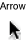 | Menu bar, desktop, scroll bar, resize control, title bar, close button, zoom button, minimize button, other controls. | Carbon: Cocoa: |
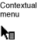 | Indicates the user can open a contextual menu for an item. Shown when the user presses the Control key while the cursor is over an object with a contextual menu. | Carbon: Cocoa: Not available |
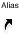 | Indicates the drag destination will have an alias for the original object (the original object will not be moved). | Carbon: Cocoa: Not available |
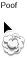 | Indicates that the proxy object being dragged will go away, without deleting the original object, if the mouse button is released. Used only for proxy objects. | Carbon: Cocoa: |
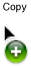 | Indicates that the drag destination will have a copy of the original object (the original object will not be moved). | Carbon: Cocoa: Not available |
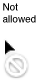 | Indicates an invalid drag destination. | Carbon: Cocoa: Not available |
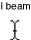 | Selecting and inserting text. | Carbon: Cocoa: |
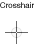 | Precise rectangular selection, especially useful for graphics objects. | Carbon: Cocoa: |
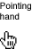 | URL links. | Carbon: Cocoa: |
Indicates that an item can be manipulated within its containing view. | Carbon: Cocoa: | |
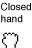 | Pushing, sliding, or adjusting an object within a containing view. | Carbon: Cocoa: |
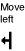 | Moving or resizing an object, usually a pane splitter, to the left. Use when the user can move the object only in the indicated direction. | Carbon: Cocoa: |
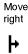 | Moving or resizing an object, usually a pane splitter, to the right. Use when the user can move the object only in the indicated direction. | Carbon: Cocoa: |
Moving or resizing an object, usually a pane splitter, to the left or the right. | Carbon: Cocoa: | |
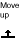 | Moving or resizing an object, usually a pane splitter, upward. Use when the user can move the object only in the indicated direction. | Carbon: Cocoa: |
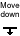 | Moving or resizing an object, usually a pane splitter, downward. Use when the user can move the object only in the indicated direction. | Carbon: Cocoa: |
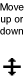 | Moving or resizing an object, usually a pane splitter, either upward or downward. | Carbon: Cocoa: |
The spinning wait cursor (see Figure 12-1) is displayed automatically by the window server when an application cannot handle all of the events it receives. If an application does not respond for about 2 to 4 seconds, the spinning wait cursor appears. You should try to avoid situations in your application in which the spinning wait cursor will be displayed. The Spin Control application provided with Xcode can help you eliminate code that is causing this cursor.
Designing Your Own Cursors
Mac OS X supports 32-bit RGBA cursors in sizes up to 64 x 64 pixels. If you need a cursor larger than that, you can implement it as a window that tracks with the cursor.
Before you design your own cursor, ask yourself if it is going to add value to the user interface. Recognize that by doing so you are introducing a new, potentially confusing user interface element. If you decide you really need a new cursor, keep the following in mind:
You need to indicate where the hot spot of the cursor is.
Your cursors need to be able to work on older hardware that may not provide hardware video acceleration.
If you create a custom version of a standard cursor, you need to also create new versions of related cursors. For example, if you create a larger arrow cursor you need to also create custom cursors for copy, move, alias, poof, and so forth.
If creating a custom cursor is necessary, both Cocoa and Carbon applications should use NSCursor methods to do so.
© 1992, 2001-2003, 2008 Apple Inc. All Rights Reserved. (Last updated: 2008-06-09)